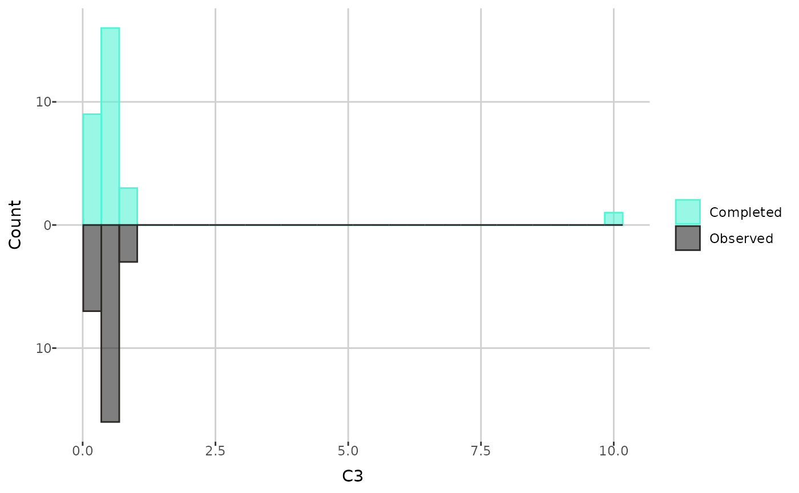

Histograms, density or beeswarm plots of individual metabolite values before and after imputation
create_distribution_plot.Rdcreate_distribution_plot() creates density plots of metabolite values
before and after imputation (with the sample limit of detection), beeswarm
plots or histograms of the values before and after imputation. Histogram
can also show only imputed values.
Usage
create_distribution_plot(
dat,
metabolite,
type = "histogram",
bins = 30,
histogram_type = "all"
)Arguments
- dat
a
raw_dataobject, the output of theread_data()function. The data have to be completed, for example using thecomplete_data()function.- metabolite
a name of the metabolite of interest.
- type
a type of the plot. Can be either "histogram" (default), "density", "beeswarm_interactive" or "beeswarm".
- bins
the number of bins for the histogram plot; 30 if not specified.
- histogram_type
if "all' (default), the histogram displays all values after imputation. If "imputed", it shows only the values that were imputed.
Examples
path <- get_example_data("small_biocrates_example.xls")
dat <- read_data(path)
dat <- complete_data(dat, "limit", "limit", "limit")
#> Completing 109 < LOD values...
#> Completing 6 < LLOQ values...
#> Completing 9 < ULOQ values...
print(create_distribution_plot(dat, "C3"))

print(create_distribution_plot(dat, "C3", type = "density"))
print(create_distribution_plot(dat, "C3", type = "beeswarm_interactive"))